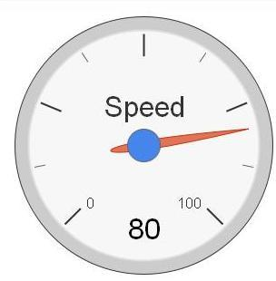
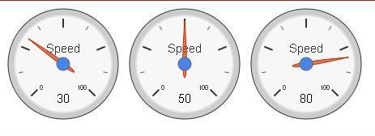
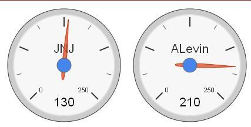
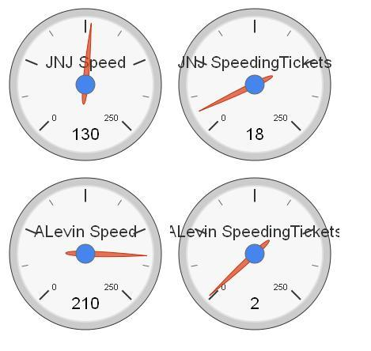
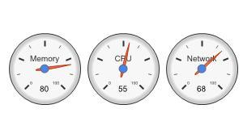
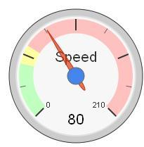
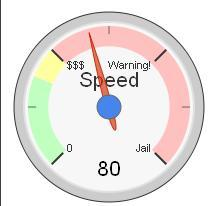

There are many scenarios where we need to show a numeric value as a gauge in order to give the final user a better data visualization for the number.
The user control is really simple, you just need to set one property in order to get the control working. The Data property. The Data property has not a strict schema.
You can assign a simple numeric variable to the property, a collection of numbers, an SDT with at least a number field, a collection of SDTs.
A classical sample can be show the Speed.

Event Start &speed.Add(30) &speed.Add(50) &speed.Add(80) EndEvent

In this case we have a simple SDT with:
Driver C(20) Speed N(4)
And we define a collection of this type and assign to the Data property.
We need to load data in the start event.
Event Start &driver = new() &driver.Driver = "JNJ" &driver.Speed = 130 &drivers.Add(&driver) &driver = new() &driver.Driver = "ALevin" &driver.Speed = 210 &drivers.Add(&driver) EndEvent

As you can see in the image the maximum value now is 250, we can change the maximum and minimun value of the control using the Max and Min properties under the Range category.
At first look we can say that ALevin is faster than JNJ.
Sometimes we need additional information for each Driver, if we add a new attribute to the SDT we can see more information
Driver C(20) Speed N(4) SpeedingTickets N(4)

This control support any SDT or BC variable in its Data property. Basically the control will display a Gauge for each numeric item of the SDT or BC.
So, if for example we have the following SDT : Computer
ComputerName C(30) Memory Numeric CPU Numeric Network Numeric
And we associate a Computer variable to our control, in runtime we are going to get:

Take into account that non-numeric fields are ignored.
The Gauge Control has many properties in order to enhance the visualization of your values.
Basically, you can draw ranges with green, yellow or red color. So there are 6 properties for this
<Color>Form = The lowest value for a range marked by a <Color> color.
<Color>To = The highest value for a range marked by a <Color> color.
So we can set the values for the Uruguay traffic rules in terms of speed.
GreenTo = 45
YellowFrom = 45
YellowTo = 60
RedFrom = 60
RedTo = 210

Is it difficult to stay in the green area? Yes, it is ;)
You can add using MajorTicksLabels property for major tick marks. The number of labels defines the number of major ticks in all gauges. The default is five major ticks, with the labels of the minimal and maximal gauge value.
So, in the sample, you can set the property to the variable &labels, where &labels is a string collection variable
&labels.Add("0")
&labels.Add("$$$")
&labels.Add("Warning!")
&labels.Add("Jail")
So now we have the following gauge for our numeric value

You can set how many minor Ticks are between each major Tick mark using the MinorTicks property.
Please visit: HowTo: Installing User Controls
GeneXus Gauge Control is based on the Google Gauge Control.
One or more gauges are rendered within the browser using SVG or VML.
Objects: Web Panel
Generators: .NET, .NET Framework, Java
| Backlinks |
| GXGoogle Visualization Library |